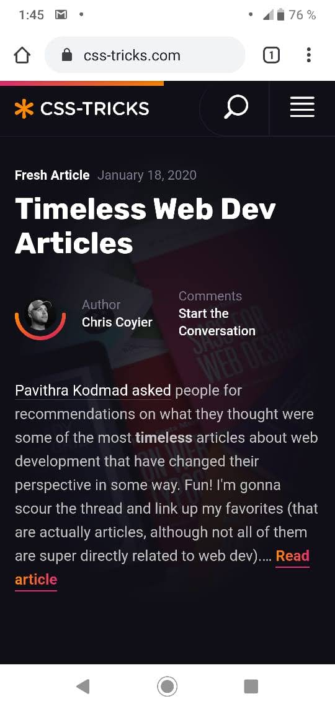

Contrast
CSS-TRICKS
View Web This website use dark colors for background with white and a very vibrant orange that creates a great contrast but also maintaining the style simple and offers a better user experience for reading.
CSS-Tricks teach how you can implement styles with css, and the y maintain the style over all the web. The effects in contrast with white and black are very common, and the embedded code inserted in the tutorials have these colors considered for the contrast.
Hick's Law
Rappi
View WebIt is a company in Latin America for food delivery, household products and many other services. In the design of their website, which is very similar to the app, they apply the Hick’s Law , offering filters and categories that facilitate the search for required products or services.
The website on mobile, desktop and app are very easy to use and optimize the time of product search, reducing the options available through filters.
Proximity
BYU Pathway
View WebPathway website is very interesting when we observe several principles design. Clearly, the pattern used in all the pages maintain a standard separation between paragraphs and elements.
It's easy to follow the reading , instructions and order in the content, because the proximity is well focused, allowing the understanding of what is related between a pair of elements or which of them belong to different areas.